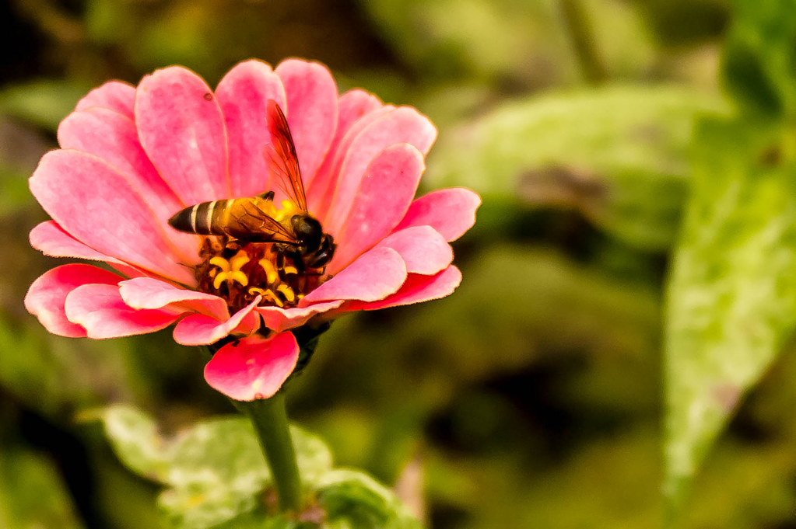

Quirks and Traits
Catalooñia has the unusual ability to communicate with animals, insects, and plants.

"Honey Bee & Flower" by Kumaravel, Thangaraj Flickr.com July 28, 2011
Home
About
Location
The Sounds of The City
Quirks And Traits